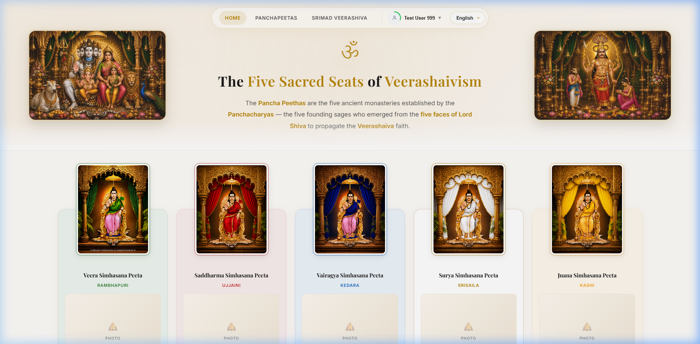
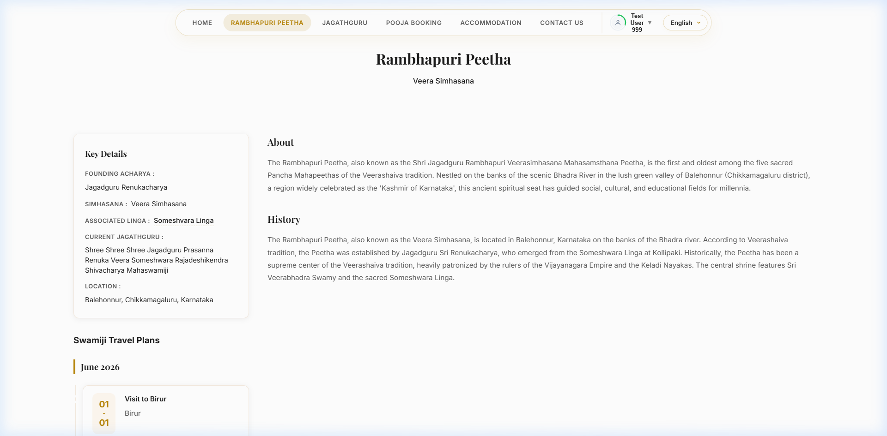
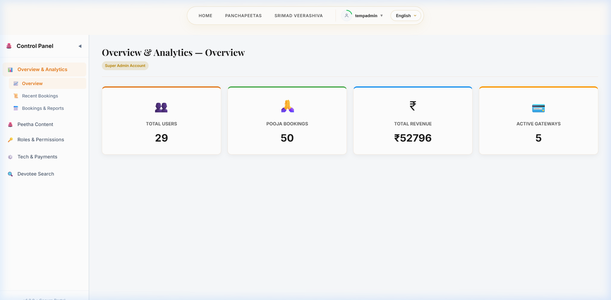
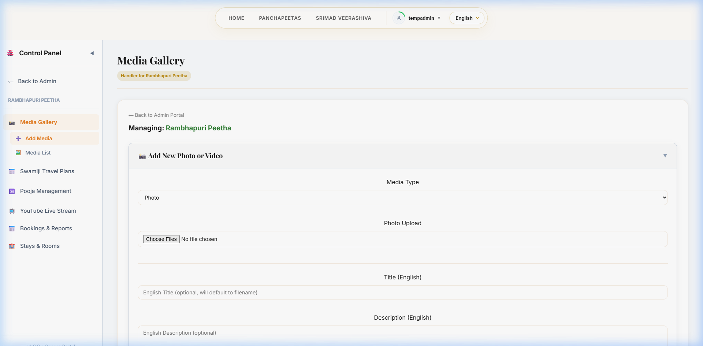
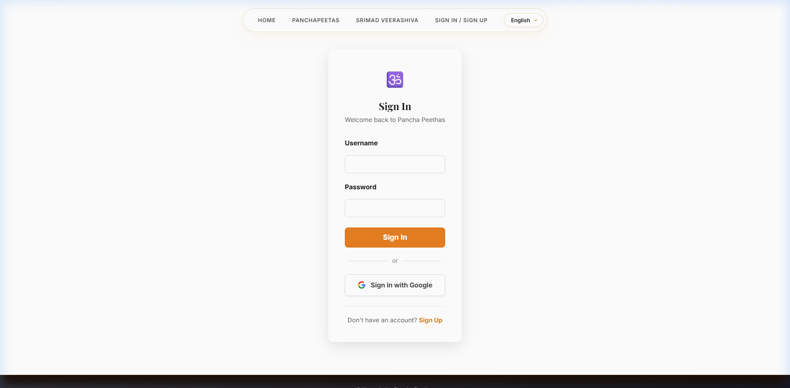

Platform Features Guide
Complete guide detailing all features of the website in simple English & Kannada
1. System Overview / ಸಮಗ್ರ ಪರಿಚಯ
IntroductionVeerashaiva Panchapeetas Portal
The Panchapeetas portal is a unified online platform representing the historical and sacred monasteries (Peethas) of the Veerashaiva tradition: Rambhapuri, Ujjaini, Kedara, Srisaila, and Kashi Peethas.
The website is designed for devotees to connect with the Peethas, book holy rituals, schedule accommodations, view swamiji travel programs, and stay updated on latest notifications.
ವೀರಶೈವ ಪಂಚಪೀಠಗಳ ತಾಣ
ಪಂಚಪೀಠ ಜಾಲತಾಣವು ವೀರಶೈವ ಸಂಪ್ರದಾಯದ ಐತಿಹಾಸಿಕ ಮತ್ತು ಪರಮ ಪವಿತ್ರ ಜ್ಞಾನಪೀಠಗಳಾದ ರಂಭಾಪುರಿ, ಉಜ್ಜಯಿನಿ, ಕೇದಾರ, ಶ್ರೀಶೈಲ ಮತ್ತು ಕಾಶಿ ಪೀಠಗಳನ್ನು ಒಂದೇ ವೇದಿಕೆಯಲ್ಲಿ ಪ್ರಸ್ತುತಪಡಿಸುವ ತಾಣವಾಗಿದೆ.
ಈ ವೆಬ್ಸೈಟ್ ಭಕ್ತರಿಗೆ ಪೀಠಗಳೊಂದಿಗೆ ನೇರ ಸಂಪರ್ಕ ಸಾಧಿಸಲು, ಪೂಜೆಗಳನ್ನು ಕಾಯ್ದಿರಿಸಲು, ವಸತಿ ಕೋಣೆಗಳನ್ನು ಬುಕ್ ಮಾಡಲು ಹಾಗೂ ಶ್ರೀ ಜಗದ್ಗುರುಗಳ ಪ್ರವಾಸ ಯೋಜನೆಗಳನ್ನು ವೀಕ್ಷಿಸಲು ಸಹಾಯ ಮಾಡುತ್ತದೆ.
7
Languages / ಭಾಷೆಗಳು
100%
Devotee Friendly / ಭಕ್ತಸ್ನೇಹಿ
Instant
Confirmations / ತಕ್ಷಣದ ದೃಢೀಕರಣ
2. Multilingual Support / ಬಹುಭಾಷಾ ಬೆಂಬಲ
LanguagesTo help devotees from all parts of India, the website is fully available in 7 languages: **English, Kannada, Hindi, Telugu, Tamil, Malayalam, and Marathi**.
- One-Click Language Switch: Devotees can easily switch the language using the menu at the top, which immediately updates all text, buttons, titles, and details.
- Local Language Text: Essential details like histories, biographies of Swamijis, and seva details are translated carefully to reflect traditional vocabulary.
ದೇಶದ ವಿವಿಧ ಭಾಗಗಳ ಭಕ್ತರ ಅನುಕೂಲಕ್ಕಾಗಿ, ಈ ವೆಬ್ಸೈಟ್ ಸಂಪೂರ್ಣವಾಗಿ 7 ಪ್ರಮುಖ ಭಾಷೆಗಳಲ್ಲಿ ಲಭ್ಯವಿದೆ: **ಇಂಗ್ಲಿಷ್, ಕನ್ನಡ, ಹಿಂದಿ, ತೆಲುಗು, ತಮಿಳು, ಮಲಯಾಳಂ ಮತ್ತು ಮರಾಠಿ**.
- ಸುಲಭ ಭಾಷಾ ಬದಲಾವಣೆ: ವೆಬ್ಸೈಟ್ನ ಮೇಲ್ಭಾಗದಲ್ಲಿರುವ ಮೆನು ಕ್ಲಿಕ್ ಮಾಡಿ ಭಾಷೆಯನ್ನು ಬದಲಾಯಿಸಬಹುದು. ಇದು ತಕ್ಷಣವೇ ಎಲ್ಲಾ ಮಾಹಿತಿ, ಬಟನ್ ಮತ್ತು ವಿವರಣೆಗಳನ್ನು ಆಯ್ಕೆ ಮಾಡಿದ ಭಾಷೆಗೆ ಬದಲಿಸುತ್ತದೆ.
- ಅಚ್ಚುಕಟ್ಟಾದ ಭಾಷಾಂತರ: ಮಠಗಳ ಇತಿಹಾಸ, ಶ್ರೀಗಳ ಪರಿಚಯ ಮತ್ತು ಪೂಜೆಯ ವಿವರಗಳನ್ನು ಭಾಷಾ ಮರ್ಯಾದೆಗೆ ತಕ್ಕಂತೆ ಅಚ್ಚುಕಟ್ಟಾಗಿ ಭಾಷಾಂತರಿಸಲಾಗಿದೆ.
| Language Name / ಭಾಷೆಯ ಹೆಸರು | Coverage / ಬಳಕೆ ವ್ಯಾಪ್ತಿ | User Interface Status / ಸ್ಥಿತಿ |
|---|---|---|
| English | All India & Global | Fully Available / ಪೂರ್ಣ ಲಭ್ಯ |
| Kannada / ಕನ್ನಡ | Karnataka state & Devotees | Fully Available / ಪೂರ್ಣ ಲಭ್ಯ |
| Hindi / हिन्दी | Northern states & National | Fully Available / ಪೂರ್ಣ ಲಭ್ಯ |
| Telugu / తెలుగు | Andhra Pradesh & Telangana | Fully Available / ಪೂರ್ಣ ಲಭ್ಯ |
3. Landing Page / ಮುಖಪುಟದ ವಿಶೇಷತೆಗಳು
HomepageThe homepage features a beautiful, clean, spiritual theme with warm saffron and gold highlights.
- Monastery Summary Cards: Interactive display boxes showing brief details of each Peetha. Each Peetha has its own distinct spiritual color theme (e.g. Kedara uses Teal, Rambhapuri uses Saffron, Srisaila uses Green).
- Devotional Music Player: A small, floating audio player at the bottom corner that plays holy stotras and chanting. It is devotee-friendly (remembers if you paused it even if you refresh or browse other pages).
- Heritage & Veerashaivism Info: Highlights brief stories and holy scriptures (such as Siddhanta Shikhamani quotes) to educate visitors.
ಮುಖಪುಟವು ಭಕ್ತರಿಗೆ ಉನ್ನತ ಆಧ್ಯಾತ್ಮಿಕ ಅನುಭವ ನೀಡುವಂತೆ ಕೇಸರಿ ಹಾಗೂ ಬಂಗಾರದ ಬಣ್ಣಗಳ ವಿನ್ಯಾಸದಿಂದ ಕಂಗೊಳಿಸುತ್ತದೆ.
- ಪಂಚಪೀಠಗಳ ಪರಿಚಯ ಕಾರ್ಡ್ಗಳು: ಪ್ರತಿ ಪೀಠದ ಸಂಕ್ಷಿಪ್ತ ವಿವರಗಳು ಇಲ್ಲಿ ದೊರೆಯುತ್ತವೆ. ಪ್ರತಿಯೊಂದು ಪೀಠಕ್ಕೂ ತನ್ನದೇ ಆದ ವಿಶಿಷ್ಟ ಧಾರ್ಮಿಕ ಬಣ್ಣವನ್ನು ನೀಡಲಾಗಿದೆ (ಉದಾ: ರಂಭಾಪುರಿ ಪೀಠಕ್ಕೆ ಕೇಸರಿ, ಕೇದಾರಕ್ಕೆ ಹಸಿರು-ನೀಲಿ).
- ಆಧ್ಯಾತ್ಮಿಕ ಸಂಗೀತ ವಾಹಕ: ಪುಟದ ಕೊನೆಯಲ್ಲಿ ಭಕ್ತರಿಗಾಗಿ ಸುಂದರ ಮಂತ್ರ ಜಪ ಕೇಳಲು ಪ್ಲೇಯರ್ ಇದೆ. ನೀವು ಬೇರೆ ಪುಟಗಳಿಗೆ ಹೋದರೂ ಇದು ತಾನಾಗಿಯೇ ಬಂದ್ ಆಗದೆ ಹಾಡುತ್ತಿರುತ್ತದೆ.
- ಸಿದ್ಧಾಂತ ಶಿಖಾಮಣಿ ಶ್ಲೋಕಗಳು: ಸನಾತನ ವೀರಶೈವ ಧರ್ಮದ ಶ್ರೇಷ್ಠ ಶ್ಲೋಕಗಳು ಭಕ್ತರ ಓದಿಗೆ ಲಭ್ಯವಿವೆ.

4. Peetha Profiles & Live Streams / ಪೀಠದ ವಿವರ ಪುಟಗಳು
Details PageEach Peetha has its own detailed profile page showing history and schedules.
- Sacred Details: Shows details of the Throne (Simhasana), Founding Sage, Holy Shiva Linga, Location, Contact numbers, and photos of the current Jagadguru Swamiji.
- Live Darshan Screen: An integrated video player that displays live streaming of daily prayers, special poojas, or festival events directly from the Peetha.
- Photo & Video Gallery: High-quality collections of festival celebrations and holy places.
ಪ್ರತಿ ಪೀಠಕ್ಕೂ ಪ್ರತ್ಯೇಕ ಪುಟಗಳಿದ್ದು, ಅಲ್ಲಿನ ಸಂಪೂರ್ಣ ಇತಿಹಾಸ ಹಾಗೂ ಕಾರ್ಯಕ್ರಮಗಳನ್ನು ಪ್ರದರ್ಶಿಸಲಾಗುತ್ತದೆ.
- ಪೀಠದ ಪವಿತ್ರ ವಿವರಗಳು: ಧರ್ಮಪೀಠದ ಸಿಂಹಾಸನ, ಆರಾಧ್ಯ ದೈವ, ಸಂಸ್ಥಾಪಕ ಋಷಿಗಳು ಹಾಗೂ ಪ್ರಸ್ತುತ ಪೀಠಾಧಿಪತಿಗಳ ಹೆಸರು ಮತ್ತು ಪೂಜ್ಯ ಶ್ರೀಗಳ ಭಾವಚಿತ್ರಗಳು ಇಲ್ಲಿವೆ.
- ನೇರ ಪ್ರಸಾರ ವಿಭಾಗ (Live Darshan): ಮಠಗಳಲ್ಲಿ ಜರುಗುವ ನಿತ್ಯ ಪೂಜೆ, ವಿಶೇಷ ಮಹೋತ್ಸವಗಳು ಮತ್ತು ಅಭಿಷೇಕಗಳನ್ನು ಭಕ್ತರು ಮನೆಯಲ್ಲೇ ಕುಳಿತು ನೇರವಾಗಿ ವೀಕ್ಷಿಸಬಹುದು.
- ಚಿತ್ರ ಸಂಪುಟ: ಮಠದ ಪ್ರಮುಖ ಉತ್ಸವಗಳು ಮತ್ತು ಐತಿಹಾಸಿಕ ಸ್ಥಳಗಳ ಸುಂದರ ಚಿತ್ರಗಳು.

5. Swamiji Travel Planner / ಶ್ರೀಗಳ ಪ್ರವಾಸ ಪಟ್ಟಿ
Travel CalendarAn easy-to-use travel schedule system designed to help devotees seek Swamiji's blessings or book local padapooja during their tours.
- Tour Schedules: Lists the cities Swamiji is visiting, tour dates, purpose of the visit (such as dharmayatra or padapooja), and local contact details.
- Calendar Filter: Allows devotees to select a specific month and year to view upcoming travel schedules.
ಶ್ರೀ ಜಗದ್ಗುರುಗಳ ದೇಶ ಸಂಚಾರ ಮತ್ತು ಧರ್ಮಪ್ರಚಾರದ ಪ್ರವಾಸ ಪಟ್ಟಿಯನ್ನು ಭಕ್ತರಿಗೆ ಸುಲಭವಾಗಿ ತಲುಪಿಸುವ ಕ್ಯಾಲೆಂಡರ್ ವ್ಯವಸ್ಥೆಯಾಗಿದೆ.
- ಪ್ರವಾಸದ ವಿವರಗಳು: ಶ್ರೀಗಳು ಭೇಟಿ ನೀಡುವ ಊರು, ಪ್ರವಾಸದ ಅವಧಿ, ಕಾರ್ಯಕ್ರಮದ ಉದ್ದೇಶ ಮತ್ತು ಸ್ಥಳೀಯ ಸಂಘಟಕರ ಸಂಪರ್ಕ ಸಂಖ್ಯೆಯನ್ನು ಪ್ರದರ್ಶಿಸುತ್ತದೆ.
- ತಿಂಗಳ ಫಿಲ್ಟರ್: ಭಕ್ತರು ತಮಗೆ ಬೇಕಾದ ವರ್ಷ ಮತ್ತು ತಿಂಗಳನ್ನು ಆಯ್ದುಕೊಂಡು ಪ್ರವಾಸದ ಮಾಹಿತಿಯನ್ನು ಸುಲಭವಾಗಿ ನೋಡಬಹುದು.
6. Seva/Pooja Booking / ಸೇವಾ ಮತ್ತು ಪೂಜೆ ಬುಕಿಂಗ್
Seva PortalDevotees can book stotra recitations, holy archanas, and special sevas online.
- Devotee Family Records: Devotees can save their family member names along with Nakshatra (Star) and Gotra, which will automatically be printed for sankalpa during rituals.
- Smart Date Availability: Shows how many slots are open for a particular seva on any given date, preventing overbooking.
- Receipt Download: On booking confirmation, a clean downloadable receipt is generated for devotees to show at the counter when visiting.
ಭಕ್ತರು ಮಠಗಳಲ್ಲಿ ಜರುಗುವ ಅಭಿಷೇಕಗಳು, ವಿಶೇಷ ಪೂಜೆಗಳು ಮತ್ತು ಸೇವೆಗಳನ್ನು ಮನೆಯಿಂದಲೇ ಆನ್ಲೈನ್ ಮೂಲಕ ಕಾಯ್ದಿರಿಸಬಹುದು.
- ಕುಟುಂಬ ಸದಸ್ಯರ ವಿವರ: ಭಕ್ತರು ತಮ್ಮ ಮನೆಯವರ ಹೆಸರು, ಜನ್ಮ ನಕ್ಷತ್ರ ಮತ್ತು ಗೋತ್ರವನ್ನು ನಮೂದಿಸಬಹುದು. ಸಂಕಲ್ಪ ಪೂಜೆಯ ಸಮಯದಲ್ಲಿ ಈ ಹೆಸರುಗಳನ್ನು ಬಳಸಲಾಗುತ್ತದೆ.
- ಖಾಲಿ ಇರುವ ಸೀಟುಗಳ ಮಾಹಿತಿ: ಆಯ್ದುಕೊಂಡ ದಿನದಂದು ಆ ಪೂಜೆಗೆ ಇನ್ನು ಎಷ್ಟು ಅವಕಾಶಗಳಿವೆ ಎಂಬುದನ್ನು ತಾನಾಗಿಯೇ ತೋರಿಸುತ್ತದೆ.
- ರಶೀದಿ ಡೌನ್ಲೋಡ್: ಬುಕಿಂಗ್ ಯಶಸ್ವಿಯಾದ ನಂತರ ಭಕ್ತರು ಮೊಬೈಲ್ನಲ್ಲೇ ರಶೀದಿಯನ್ನು ಡೌನ್ಲೋಡ್ ಮಾಡಿಕೊಳ್ಳಬಹುದು.
7. Accommodation Booking / ವಸತಿ ಕೊಠಡಿ ಕಾಯ್ದಿರಿಸುವಿಕೆ
Yatri NivasPilgrims can book rooms online at the Peetha’s Yatri Nivas (Guest Houses).
- Room Selection: Clearly displays room choices based on categories such as AC, Ordinary Non-AC, and availability of hot water.
- Date Selectors: Enter arrival and departure dates to see room availability.
- Guest Limits: Recommends extra mattresses and highlights maximum guest allowance per room category.
ಮಠದ ಯಾತ್ರಿ ನಿವಾಸಗಳಲ್ಲಿ ಭಕ್ತರು ಕೊಠಡಿಗಳನ್ನು ಮುಂಚಿತವಾಗಿ ಕಾಯ್ದಿರಿಸಲು ಸಹಾಯ ಮಾಡುವ ವ್ಯವಸ್ಥೆ.
- ಕೊಠಡಿಗಳ ಆಯ್ಕೆ: ಹವಾನಿಯಂತ್ರಿತ (AC), ಸಾಮಾನ್ಯ ಕೊಠಡಿಗಳು (Non-AC) ಮತ್ತು ಬಿಸಿನೀರಿನ ವ್ಯವಸ್ಥೆ ಇರುವ ಮಾಹಿತಿಗಳನ್ನು ಸ್ಪಷ್ಟವಾಗಿ ಪ್ರದರ್ಶಿಸುತ್ತದೆ.
- ದಿನಾಂಕದ ಆಯ್ಕೆ: ಭಕ್ತರು ಬರುವ ಮತ್ತು ಹೋಗುವ ದಿನಾಂಕವನ್ನು ನಮೂದಿಸಿ ಕೊಠಡಿಗಳು ಲಭ್ಯವಿವೆಯೇ ಎಂದು ಪರಿಶೀಲಿಸಬಹುದು.
- ಜನರ ಮಿತಿ: ಪ್ರತಿ ರೂಮಿನಲ್ಲಿ ಎಷ್ಟು ಜನರಿಗೆ ಅವಕಾಶವಿದೆ ಮತ್ತು ಹೆಚ್ಚಿನ ಹಾಸಿಗೆ ಲಭ್ಯತೆಯ ವಿವರಗಳನ್ನು ನೀಡುತ್ತದೆ.
8. Management Dashboard / ಮಠದ ಆಡಳಿತ ಸ್ಕ್ರೀನ್
Admin ControlsA secure control dashboard for the main administrator (Super Admin) and individual temple managers (Peetha Handlers).
- Overview Statistics: Display total registered devotees, number of successful bookings, total donations/revenue collected, and active payment modes.
- Task Panels: Managers can easily add new seva types, enter room categories, modify pricing, upload pictures, and update the Swamiji's travel plan.
- Feature Toggles: Super Admins can turn features on or off instantly (e.g., turn on/off the stotra player).
ಸೂಪರ್ ಅಡ್ಮಿನ್ ಹಾಗೂ ಆಯಾ ಮಠದ ವ್ಯವಸ್ಥಾಪಕರು ಜಂಟಿಯಾಗಿ ಬಳಸುವ ಸುಲಭ ಮತ್ತು ಭದ್ರವಾದ ಆಡಳಿತ ತಾಣ.
- ಅಂಕಿ-ಅಂಶಗಳ ವಿವರ: ಒಟ್ಟು ನೊಂದಾಯಿತ ಭಕ್ತರು, ಯಶಸ್ವಿ ಪೂಜೆಗಳು, ಸಂಗ್ರಹವಾದ ಕಾಣಿಕೆ ವಿವರಗಳನ್ನು ಚಾರ್ಟ್ಗಳಲ್ಲಿ ಸುಲಭವಾಗಿ ಅರ್ಥವಾಗುವಂತೆ ತೋರಿಸುತ್ತದೆ.
- ಸೇವಾ ವಿವರ ಸೇರ್ಪಡೆ: ಹೊಸ ಸೇವೆಗಳ ಸೇರ್ಪಡೆ, ಬೆಲೆ ನಿಗದಿ, ಶ್ರೀಗಳ ಪ್ರವಾಸ ಯೋಜನೆಗಳು ಮತ್ತು ಮಠದ ಚಿತ್ರಗಳನ್ನು ಮ್ಯಾನೇಜರ್ಗಳು ಸ್ವತಃ ಅಪ್ಲೋಡ್ ಮಾಡಬಹುದು.
- ವೈಶಿಷ್ಟ್ಯಗಳ ನಿಯಂತ್ರಣ (Toggles): ವೆಬ್ಸೈಟ್ನ ಪ್ರಮುಖ ವಿಭಾಗಗಳನ್ನು (ಉದಾ: ಮಂತ್ರ ಜಪದ ಪ್ಲೇಯರ್) ಅಗತ್ಯವಿದ್ದಾಗ ಸೂಪರ್ ಅಡ್ಮಿನ್ ಆಫ್ ಅಥವಾ ಆನ್ ಮಾಡಬಹುದು.

9. Homepage Content Editor / ಮುಖಪುಟದ ವಿಷಯ ನಿರ್ವಾಹಕ
CMSAllows temple managers to update descriptions on the homepage without needing a web developer to edit code files.
- Direct Text Updates: Change titles, introductions, shlokas, and conclusions for any section and language dynamically.
- Text File Upload: Upload a simple `.txt` document to instantly update large blocks of paragraphs on the website.
ವೆಬ್ ಡಿಸೈನರ್ಗಳ ಸಹಾಯವಿಲ್ಲದೆಯೇ ಮಠದ ವ್ಯವಸ್ಥಾಪಕರು ತಾವೇ ಮುಖಪುಟದ ಪಠ್ಯಗಳನ್ನು ಅಪ್ಡೇಟ್ ಮಾಡಲು ಈ ವ್ಯವಸ್ಥೆ ಸಹಾಯ ಮಾಡುತ್ತದೆ.
- ನೇರ ಬದಲಾವಣೆ: ಶೀರ್ಷಿಕೆಗಳು, ಪರಿಚಯ ಪಠ್ಯಗಳು, ಶ್ಲೋಕಗಳು ಮತ್ತು ಮುಕ್ತಾಯದ ಮಾತುಗಳನ್ನು ಸುಲಭವಾಗಿ ನವೀಕರಿಸಬಹುದು.
- ಫೈಲ್ ಅಪ್ಲೋಡ್: ದೊಡ್ಡದಾದ ಲೇಖನಗಳನ್ನು ಕೇವಲ ಟೆಕ್ಸ್ಟ್ ಫೈಲ್ ರೂಪದಲ್ಲಿ ಅಪ್ಲೋಡ್ ಮಾಡುವ ಮೂಲಕ ವೆಬ್ಸೈಟ್ನಲ್ಲಿ ಪ್ರಕಟಿಸಬಹುದು.

10. Devotee Experience & Birthday Wishes / ಭಕ್ತರ ಪ್ರೊಫೈಲ್
Devotee DashboardOffers devotees a personal profile dashboard after log-in.
- Devotee Profile Card: Access personal booking history, download receipts, and keep track of selected nakshatra and gotra details.
- Google Sign-In: Devotees can sign in quickly using their Google account securely.
- Birthday Blessings: If it's a devotee’s birthday, the website automatically greets them with a personalized blessing screen and spiritual wishes from the Jagadgurus.
ಭಕ್ತರು ಲಾಗಿನ್ ಆದ ನಂತರ ತಮ್ಮ ವೈಯಕ್ತಿಕ ವಿವರಗಳನ್ನು ಪಡೆಯುವ ಪುಟ.
- ಬುಕಿಂಗ್ ಇತಿಹಾಸ: ತಾವು ಈ ಹಿಂದೆ ಮಾಡಿದ ಬುಕಿಂಗ್ಗಳು, ಪಾವತಿಸಿದ ಕಾಣಿಕೆ ಮತ್ತು ರಶೀದಿಗಳನ್ನು ಇಲ್ಲಿ ನೋಡಬಹುದು.
- ಗೂಗಲ್ ಲಾಗಿನ್ ಬೆಂಬಲ: ಭಕ್ತರು ತಮ್ಮ ಗೂಗಲ್ ಇಮೇಲ್ ಐಡಿ ಬಳಸಿ ಯಶಸ್ವಿಯಾಗಿ ಮತ್ತು ಸುಲಭವಾಗಿ ಸೈನ್ ಇನ್ ಮಾಡಬಹುದು.
- ಜನ್ಮದಿನದ ಶುಭಾಶಯಗಳು: ಭಕ್ತರ ಹುಟ್ಟುಹಬ್ಬದಂದು ಸಿಸ್ಟಂ ತಾನಾಗಿಯೇ ಜಗದ್ಗುರುಗಳ ಶುಭ ಸಂದೇಶ ಹಾಗೂ ಆಶೀರ್ವಾದದ ವಿಶೇಷ ಚಿತ್ರವನ್ನು ತೋರಿಸುತ್ತದೆ.

11. Mobile App Companion / ಮೊಬೈಲ್ ಆಪ್ ಸಂಗಾತಿ
Mobile CompanionA companion mobile app designed especially for temple managers and handlers.
- On-the-go Management: Allows handlers to manage room bookings and check travel plans directly from their Android smartphones.
- Devotee Safety: Ordinary devotees are restricted from logging into the mobile app, ensuring that administration remains private and secure. Devotees use the website instead.
- Stay Logged In: Re-entering passwords is not needed; the app remembers the admin manager session.
ವಿಶೇಷವಾಗಿ ಮಠದ ವ್ಯವಸ್ಥಾಪಕರು ಹಾಗೂ ಮ್ಯಾನೇಜರ್ಗಳಿಗಾಗಿ ಸಿದ್ಧಪಡಿಸಲಾದ ಆಂಡ್ರಾಯ್ಡ್ ಮೊಬೈಲ್ ಆಪ್.
- ಮೊಬೈಲ್ ಆಡಳಿತ: ಮ್ಯಾನೇಜರ್ಗಳು ತಮ್ಮ ಮೊಬೈಲ್ ಮೂಲಕವೇ ಕೊಠಡಿ ಲಭ್ಯತೆ ನವೀಕರಿಸಬಹುದು ಹಾಗೂ ಬುಕಿಂಗ್ಗಳನ್ನು ಪರಿಶೀಲಿಸಬಹುದು.
- ಹೆಚ್ಚಿನ ಭದ್ರತೆ: ಸಾಮಾನ್ಯ ಭಕ್ತರಿಗೆ ಆಪ್ನಲ್ಲಿ ಲಾಗಿನ್ ಅವಕಾಶವಿರುವುದಿಲ್ಲ, ಇದು ಆಡಳಿತದ ಭದ್ರತೆಯನ್ನು ಹೆಚ್ಚಿಸುತ್ತದೆ. ಭಕ್ತರು ಮುಖ್ಯ ಜಾಲತಾಣವನ್ನೇ ಬಳಸಬಹುದು.
- ಸದಾ ಸಕ್ರಿಯ ಲಾಗಿನ್: ಆಪ್ ಅನ್ನು ಪ್ರತಿಸಲ ತೆರೆದಾಗಲೂ ಪಾಸ್ವರ್ಡ್ ಹಾಕುವ ಅಗತ್ಯವಿಲ್ಲ, ಇದು ಲಾಗಿನ್ ಸ್ಥಿತಿಯನ್ನು ನೆನಪಿನಲ್ಲಿಟ್ಟುಕೊಳ್ಳುತ್ತದೆ.